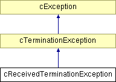

Main Page
Modules
Classes
Files
Directories
Class List
Class Hierarchy
Class Members
cReceivedTerminationException Class Reference
[
Parallel simulation support
]
Represents a termination exception that has been received from other partitions.
More...
#include <
creceivedexception.h
>
Inheritance diagram for cReceivedTerminationException:

List of all members.
Public Member Functions
cReceivedTerminationException
(int sourceProcId, const char *msg)
Detailed Description
Represents a termination exception that has been received from other partitions.
Constructor & Destructor Documentation
cReceivedTerminationException::cReceivedTerminationException
(
int
sourceProcId
,
const char *
msg
)
Constructor.
The documentation for this class was generated from the following file:
creceivedexception.h
Generated on Sun Nov 19 13:30:41 2006 for OMNeT++ Parallel Simulation Support by
1.4.6
 1.4.6
1.4.6